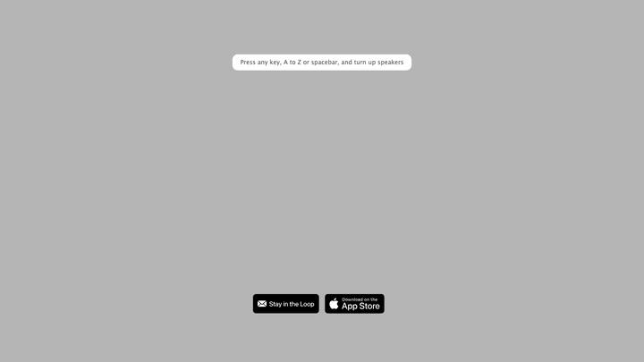
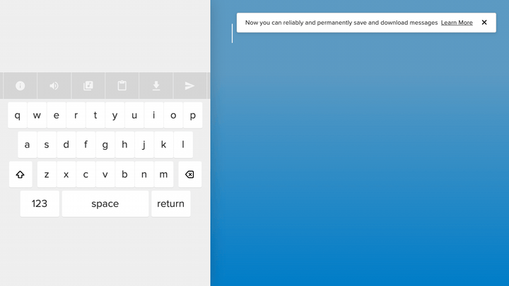
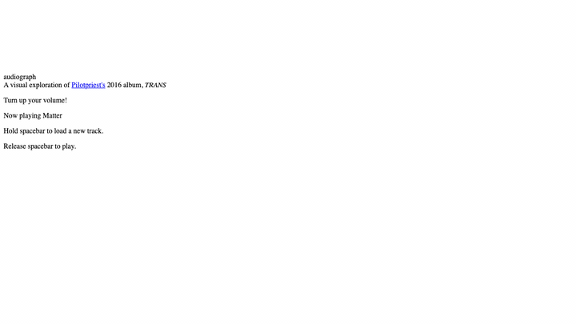
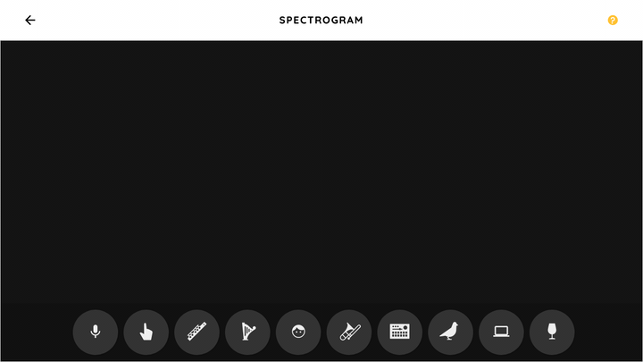
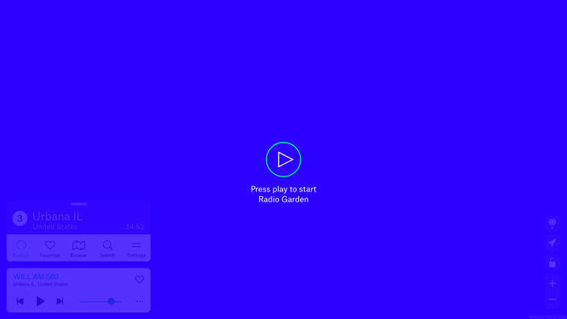
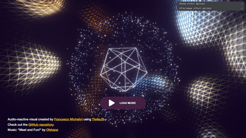

Music visualization & audio-coordinated motion
Curated references that lean authored, spatial, typographic, or structural rather than generic fractal or “liquid LSD” mush.
Each web example includes a short silent GIF from headless Chromium (see captions for regenerate commands). Clips may look idle on keyboard-first experiences until you open the live site.
Research pass: web (Codrops, Experiments with Google, artist tools) plus parallel passes for editorial Blender music-video pipelines (geometry nodes, baked audio).
Web — synesthesia, albums, space, education
Patatap
Live: https://www.patatap.com/
· Jono Brandel + Lullatone (Two.js). Chrome Experiment.
- Each letter key pairs a designed motion graphic with a sound; space swaps palette worlds.
- Motion design as instrument—not a shader stack reacting to a single FFT texture.

GIF: plans/assets/music-viz-patatap-capture.gif
· regenerate: pnpm exec tsx scripts/capture-site-gif.ts --url "https://www.patatap.com/" --out plans/assets/music-viz-patatap-capture.gif --seconds 4 --settle-ms 3500 --gif-width 720
Typatone
Live: https://typatone.com/
· Sister tool to Patatap (typing → melody, moods, sharing).
- Typography drives pitch and rhythm; composition is the interface.

GIF: plans/assets/music-viz-typatone-capture.gif
· regenerate: pnpm exec tsx scripts/capture-site-gif.ts --url "https://typatone.com/" --out plans/assets/music-viz-typatone-capture.gif --seconds 4 --settle-ms 3500 --gif-width 720
Audiograph
Live: https://www.audiograph.xyz/
· Matt DesLauriers — WebGL + Web Audio for Pilotpriest TRANS (Dolby Web Audio challenge).
- Album-native visual room: hold space to queue tracks, release to play—depth, noise-driven vertex motion, colour palettes, post stack.
- Code: github.com/mattdesl/audiograph.xyz

GIF: plans/assets/music-viz-audiograph-capture.gif
· regenerate: pnpm exec tsx scripts/capture-site-gif.ts --url "https://www.audiograph.xyz/" --out plans/assets/music-viz-audiograph-capture.gif --seconds 4 --settle-ms 4000 --gif-width 720
Chrome Music Lab — Spectrogram
Live: https://musiclab.chromeexperiments.com/spectrogram/
· Google Creative Lab (Web Audio, companion experiments use Tone.js).
- Teaches frequency vs. time with mic or built-in sounds—honest signal view instead of decorative blobs.

GIF: plans/assets/music-viz-spectrogram-capture.gif
· regenerate: pnpm exec tsx scripts/capture-site-gif.ts --url "https://musiclab.chromeexperiments.com/spectrogram/" --out plans/assets/music-viz-spectrogram-capture.gif --seconds 4 --settle-ms 4000 --gif-width 720
Radio Garden
Live: https://radio.garden/
· Studio Puckey × Moniker; WebGL globe + live streams.
- Geo-spatial listening UI as the whole product—music discovery by spinning Earth, not by remapping FFT to glow.

GIF: plans/assets/music-viz-radio-garden-capture.gif
· regenerate: pnpm exec tsx scripts/capture-site-gif.ts --url "https://radio.garden/" --out plans/assets/music-viz-radio-garden-capture.gif --seconds 4 --settle-ms 4000 --gif-width 720
Three.js — audio-reactive demo (Netlify)
Live: https://threejs-audio-reactive-visual.netlify.app/

GIF: plans/assets/music-viz-threejs-audio-reactive-capture.gif
(this page is visually busy; captured at 480px / 10 fps to keep the file smaller)
· regenerate: pnpm exec tsx scripts/capture-site-gif.ts --url "https://threejs-audio-reactive-visual.netlify.app/" --out plans/assets/music-viz-threejs-audio-reactive-capture.gif --seconds 3 --settle-ms 3500 --gif-width 480 --fps 10
Artefakt.mov
Live: https://artefakt.mov/
· Film production studio — typographic / grain motion (existing repo capture).
- Reference for motion type + texture in a music-adjacent reel context; GIF already captured in this repo.

GIF: plans/assets/artefakt-mov-capture.gif
· regenerate: pnpm run capture-artefakt-gif
Song Exploder presents: Inside Music
Live: https://g.co/insidemusic
· Google Creative Lab × Song Exploder (A-Frame + Three.js + Tone.js, spatial audio stems).
- Walk inside a mix, toggle stems—not a screensaver viz. Best experienced live (VR-capable); no batch GIF in this board.
Soundwaves.world
Live: https://soundwaves.world/
- Festival-style volumetric / performance presentation on the web; capture omitted here (heavy / event landing).
Deeper cuts — generative systems (bookmark)
Macronaut
Live: https://toxi.co.uk/macronaut/
· toxi + meekmocha — cuepoint-driven scene cuts, procedural geometry tied to a single MP3 timeline.
- Useful model for score-like visual structure (not real-time mic input).
SonoMorphis
Live: https://bernd-lintermann.de/SonoMorphis/index.html
· installation — evolving 3D forms ↔ timbre/pitch (research-era but clear concept).
Blender — editorial music video & geometry nodes + audio
OK Go — “Impulse Purchase” (Blender press + video)
Watch: YouTube — OK Go Impulse Purchase
· Notes: Blender.org press — production overview
- GN-heavy, character-led motion design; reference for readable art direction tied to song structure.
Mike Hodgetts — Geometry nodes for audio-reactive music videos (Blender Conference 2024)
Watch: YouTube — talk
· video.blender.org mirror
· Conference page
- Collage / sculpture-derived imagery, waveform buffers, emission driven by audio—structural sync.
Will Anderson — Making an OK Go video in geometry nodes (Blender Conference 2025)
Watch: video.blender.org
· Conference page
MILM — “Transmogrified” (music video, GN-assisted)
Watch: YouTube
· BlenderNation write-up
Sketches for Humanity — spectrogram mesh + geometry nodes (tutorial)
Watch: YouTube — Geometry Nodes music visualisation
- Pipeline: spectrogram image → topology, plus bake sound to F-curve for punch—bridges analysis to 3D without fractal noise default.